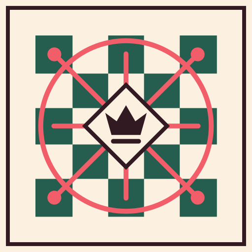

Tap a square to place a queen. Tap again to remove it.
This clears your best score for every piece in both modes.
Cover every square by occupying or attacking it.
Fit as many pieces as you can. None may attack another.
Place from the tray. Tap again or drag off the board to remove.
Tap the coverage card.
Click again for another.
Changing the piece type clears the board.